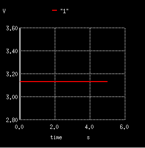

Mete Musluoglu
June 2018
| R1 | 10 |
| R2 | 5 |
| V | 9.4 |
| UR1 | 6.2 |
| UR2 | 1.88 |
1
2
∗ Spice netlister for gnetlist
R2 2 0 6
R1 1 2 3
V1 0 1 9.4
.END
3
With the help of ngspice we declared time to see our values in a graphical form. Then we got our graphs by the function ”plot”.
4
5